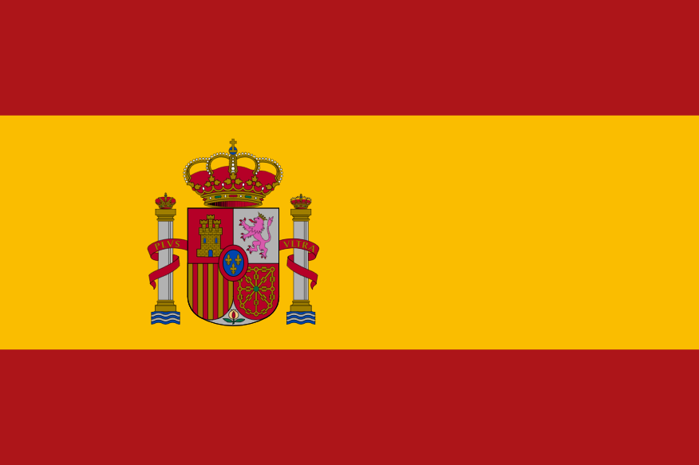
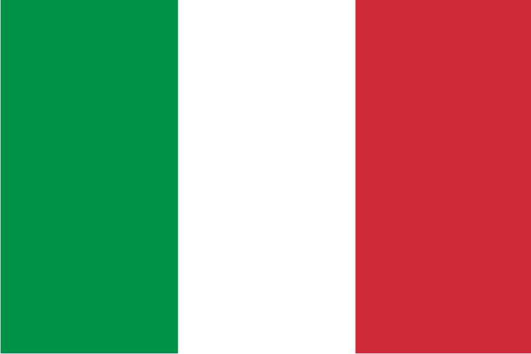
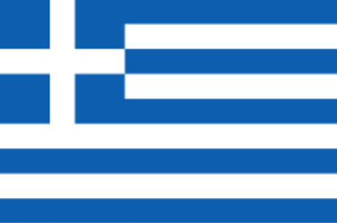
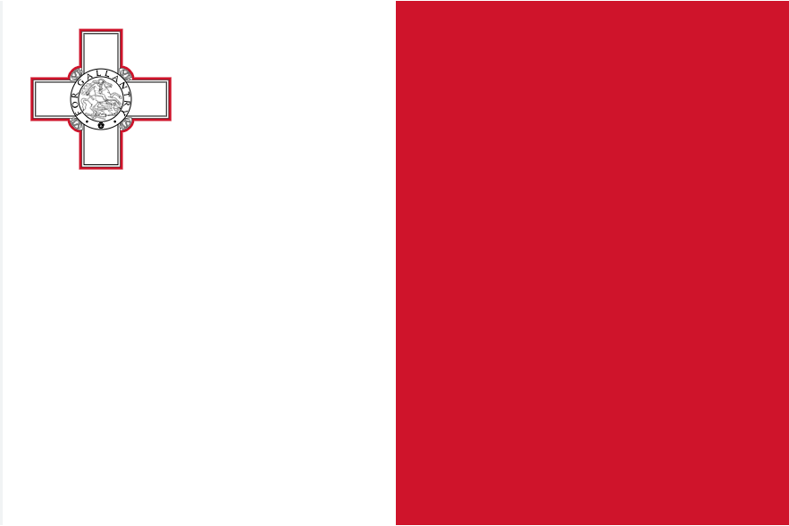

Spain
The modern combination of red and yellow on the Spanish flag was the striking contrast made it easy to distinguish Spanish warships at sea from the vessels of other nations.

Italy
The design of the Italian tricolor was based on the French flag, with the blue stripe replaced by a green one, as green was the color of the Milanese civic guard and symbolized hope for the country's unification.

Greece
The nine white and blue stripes on the Greek flag symbolize the nine syllables of the national motto "Freedom or Death", which led the Greeks into battle during the War of Independence.

Malta
The flag of Malta features the British George Cross with the inscription "For Gallantry", which King George VI personally awarded to the entire population of the island in 1942 for mass heroism during World War II.